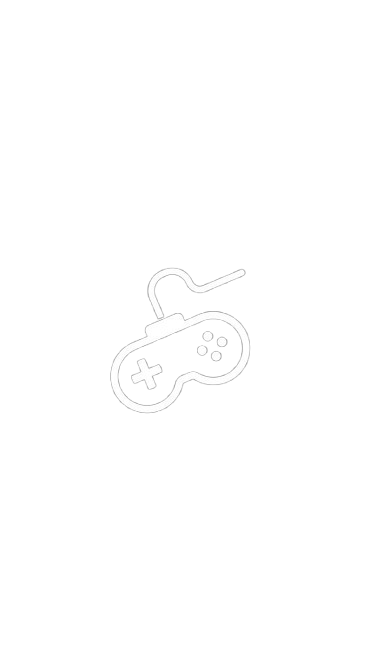
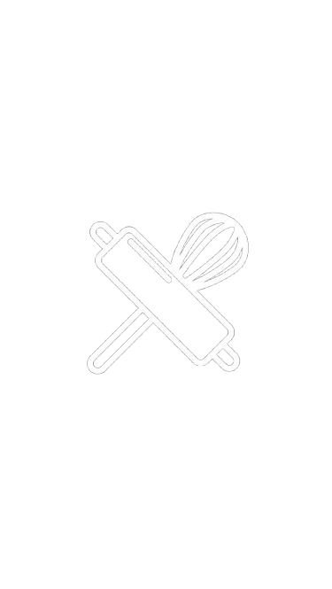

CONOCE MIS HOBBIES
Mis Hobbies favoritos


BAILAR
Desde muy pequeña he disfrutado mucho bailar. Siempre me han parecido muy bonitos y divertidos muchos estilos de baile. Aunque nunca he sido realmente buena bailando, es algo que disfruto mucho hacer. A veces me da pena bailar frente a personas con las que no tengo confianza o en público, pero aun así sigue siendo muy disfrutable.
TOCAR EL PIANO
En general la musica es algo que siempre me ha interesado. Desde pequeña siempre quise aprender a tocar un instrumento, y a los 12 tuve la oportunidad de aprender a tocar el piano. Aunque no soy muy buena y no me se muchas canciones, es muy divertido pensar que puedo tocar cualquier canción que desee siempre y cuando me esfuerce.